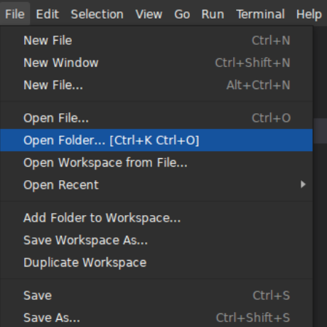
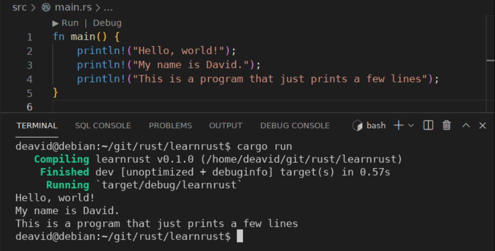

Learn programming with Rust as first language
- Source for this book: https://github.com/deavid/lprfl
- Author: David Martínez Martí
- Blog: https://deavid.wordpress.com/
Introduction
Coding can be a daunting task to any beginner. In fact even at seniority levels, it still is for advanced concepts. As you get on your journey of learning how to code you’ll begin to find previous hard tasks as easy, and at some point they will become so obvious that it gets hard to imagine how other people don’t understand them. But regardless, there will always be daunting tasks waiting for you. Programming is not about the destination, it is about the journey itself.
It’s not something that you learn and you’re done. There’s almost an infinite amount of stuff that can be learned and used, as you gain more expertise, you’ll be able to specialize on certain types of programs and make them go the extra mile, which feels very satisfying. This field also keeps constantly evolving, so much that in 10 years the job requirements change drastically and it might be difficult to find a job if we don’t keep learning.
If you enjoy learning and trying to do new stuff day by day, then this is for you. It will get easier over time, I promise!
From zero knowledge on programming to being able to apply to any job and hope to succeed, it takes at least 6 months with full day dedication (8 hours a day) if you’re a good learner.
To get rid of the “junior” title, another 2-3 years are needed in a job usually. And (real) seniors have at least 8 years of experience. From there, the differences between someone with 8 or 20 years of experience tend to be very dim; it depends more on the people themselves than the experience.
The good news is that with enough dedication you can get yourself employed in record time, which for other careers requires proper study at a university, which takes several years. And you’ll be able to grow easily on the job. Getting employed is not the destination, but maybe a new beginning. There’s always a huge demand on good developers, so if you prove yourself good, even if the company doesn’t allow you to grow, there will be several companies wanting your talent and will raise the offer accordingly.
So, before taking this journey ask yourself: Is this the path I want to take? If the answer is yes, then do it! commit and push forward to get it.
NOTE: I love oversimplifying a lot!. And I will lie in order to make things look simpler and create simple rules that don’t always work. This is done on purpose to make the experience easy to follow and add concepts slowly. I will correct these and get into specifics slowly as I feel the reader got enough knowledge to understand the whole thing.
Your first programming language
This is a common question everyone asks themselves. In my opinion, Python and Rust are the two best languages to start with. While Python will give you an easier time to begin, and plenty of jobs that actually exist, Rust is going to be a bit harder to begin with, with way less jobs.
As the title suggests, I’m going to recommend Rust. Why? Lots of reasons. I believe Rust will be the language of the future, so by the time you learn it hopefully there will be jobs waiting for you.
Rust also will teach you proper coding practices. As it is stricter, it will force you into the right shape and mindset for a programmer, and not someone who stitches things together that delivers delicate programs that break in strange ways just by looking at them.
The Rust community is very friendly. You’ll have a lot of people wanting to teach you the language and help you along on this. Python is a bit of hit-and-miss, some communities might be toxic.
The documentation is solid, nicely written, and very easy to follow. The reference docs might be a bit complex to understand at first, but after the first month or two it becomes very practical.
Rust has potential to be used for anything. Web, games, embedded devices, operating systems, browsers, you name it. There are still several gaps at the moment of this writing due to the nature of Rust being so new; over time more libraries will be created and mature, so right now there are several types of applications where Rust might not be fit. For now.
Python is very powerful and is able to do most of the applications that you might want to do, and it is very quick to write and get results with it. But it has several downsides (one is performance) that are very unlikely to disappear in the next 10 or 20 years1.
In the end, it doesn’t matter that much which language you start with. As long as you can learn to code, the language isn’t that important. All languages have lots of similarities, so much that when you learn the second one it will take 99% less time than the first.
And you can’t count on learning a single language (i.e. Rust) and hope that this would be all. There are always languages that are very good at one thing, and you should learn those too. Because you don’t want to spend a week doing something in Rust that takes 1 line of Bash to do, if there’s no real reason or benefit2 for it.
So, no worries, you’ll be fine. You’ll learn other languages over the course of years and that will take less and less time as you go.
As usual, there are several companies trying to make Python faster. Some efforts are going through “compiling” typed python code with great speedups. There’s also PyPy. But the community at this point does not want a “typed Python” so I don’t see the performance being fixed in the near future.
I’ve seen someone write a full Java application for several days, trying to make it as fast as possible, and someone else came up with a Bash one liner with pipes that did the same thing 2x faster, and they basically spent 5 minutes writing the line. Use the best tool for each job. You should learn more than one programming language.
Related books
The holy Rust book
You must know that there exists a book called just “The Rust book” or “the book”.
I will (jokingly & friendly) call it here “The holy rust book”.
You can check it here: https://doc.rust-lang.org/stable/book/
The holy book is the main learning resource for Rust. It is the true starting point for learning the language and contains everything, from beginner to truly advanced. It covers the entire language (except the uses of Unsafe, that are covered in the Necronomicon… I mean, the Rustonomicon)
This guide is not meant to replace the holy book itself, as it is very well written by experts and reviewed by the whole community.
If that’s the case, what’s the point of this then? Well, the holy book assumes some knowledge. It will rapidly grow in difficulty and will require several reads for beginners and look in other places as well to fully grasp the concepts.
Only a small part of the language will be covered here; enough to get you started, and at a slow pace enough to follow without external resources (hopefully). From time to time I’ll link to the holy book, so you can go there to read if you like, as there’s more detail.
I call it “holy” because it’s the Rust Bible (in fact some people call it that). If the holy book disagrees with me, the book is right, I’m wrong. Whatever it says, it is right. A lot of people call Rust a cult (seriously) so I pretend to extend and embrace the term to make it a funny joke.
Other Rust books
See https://github.com/sger/RustBooks
- Rust by Example
- Easy Rust
- A Gentle Introduction to Rust
Setting up the computer
So you reached this point! I guess we’re doing it. Let’s stop the chatter and bring in the real stuff. Let’s install Rust.
Installing Rust
Get your browser and go to https://rustup.rs/. Follow the instructions there.
- For Windows, there’s a
rust-init.exethat you download and will install everything. - For Linux (my case), there’s a single command line that you copy and paste into the console.
(By the way, if you want to be a developer, you also need to make the terminal your friend)
That will be all we need to do. Congrats! You installed Rust in your machine!
Chapter 1.1 - Installationof the Holy Book contains the installation instructions.
Choosing an editor for Rust
I’m very opinionated here. Get Visual Studio Code. (not to be confused with MS Visual Studio)
People call it VS Code or just “Code”. It’s open source, supports nearly all languages, and works really, really well.
From those that code with Rust, they mainly use VS Code or Vim. And I’m not going to recommend Vim to anyone. It is an excellent program, but geared towards very senior people. So VS Code it is.
I have more than 15 years coding, and I do use VS Code. It’s great. On the other hand, I almost never use Vim: it requires a lot of investment that I don’t want to commit to.
Now, go to the extensions panel and search for “rust-analyzer” and install it. This is all you need to get the best Rust experience.

(It is really important to have Rust properly installed at this point, or rust-analyzer will fail)
Your first program
Before doing anything, it is important to have a folder where you put all your programs.
So go ahead and create a folder with the name you like (i.e. “programs”)1.
1: Personally I use Git for everything, and I have
the folders structured as /home/deavid/git/rust/project_name.
A few tips though:
-
Prefer to use lowercase only for the folder, no spaces. Use an underscore if you need to separate words, but I would recommend writing something short.
-
Place the folder somewhere that has a short, easy path. Don’t place it on your Desktop. On Windows, “C:" might be better as the home folder contains a path with spaces.
Now open a terminal and go to this folder.
Using cd .. and cd your_folder_name should do the trick.
If you followed my tips, this should be an easy task.
Once you’re set, run the following command:
$ cargo new learnrust
This will create a folder called learnrust, you should be able to find it with
your file explorer.
Inside, there are a few folders and files.
This is how an empty Rust program looks.
It already includes a program in src called main.rs (we’ll check out the contents later).
And it can be executed.
Do cd learnrust on the console to get into the folder, then run:
$ cargo run
The output will be similar to this:
$ cargo run
Compiling learnrust v0.1.0 (/home/deavid/git/rust/learnrust)
Finished dev [unoptimized + debuginfo] target(s) in 0.34s
Running `target/debug/learnrust`
Hello, world!
The program has been built and executed. The program output is “Hello, world!”.
Congrats! You just wrote your first program. (more or less, hah)
If you execute “cargo run” again, then:
$ cargo run
Finished dev [unoptimized + debuginfo] target(s) in 0.00s
Running `target/debug/learnrust`
Hello, world!
Notice how something is different. At first, it compiled the program, then executed it. On the second time, it noticed that the program was unchanged, so it was run without compiling it again.
This is covered in Chapter 1.2 - Hello World! of the holy book.
What is this cargo command?
Surely you noticed that we did “cargo run” and not “rust run”. Cargo is like the swiss-army knife of Rust, it will simplify all our processes during coding, and removes a lot of stuff that we don’t need to learn.
Main things that it does:
- Instead of compiling the program with
rustc, it’s justcargo build.rustcwill need flags, and it’s a bit tricky to do right, cargo makes this super simple. - The programs are built in
./target/debug/or./target/release. We could run these directly, but we would need to remember to build them first.cargo rundoes this for us. - We might need to download libraries for additional stuff
(this is common in all programming languages), but instead of doing this manually,
we can declare in
Cargo.tomlwhich ones do we want, and when we docargo buildit will download anything missing automatically.
There’s much more than this, but for now this is what we will be using.
The bottom line is that we will always use cargo and forget about the other commands.
That’s fewer things to remember.
As a side note, if you installed with rustup.rs as I recommended, there’s
also a rustup command. This is used to update rust and cargo themselves.
If you need to update, just run rustup update and everything will be done
automatically.
It’s a good idea to do this once a month or so, but if you don’t do it is also fine.
Quick, to the IDE!
Let’s start using that nice VS Code that we installed earlier.
Open VS Code, look for the Menu File and click Open Folder....

Select the learnrust folder that cargo created.
NOTE: For myself, I find more convenient to open VSCode from the terminal.
I simplycd learnrustand runcode .. VSCode will open the folder.
Now, open the src folder using the left panel, and you’ll see the main.rs.
Double-click on it.
This is what you should see:
fn main() { println!("Hello, world!"); }
fn main() represents the main program.
The brackets next to it ({ and }) define where the program starts and ends.
Right now there’s only one line in the program: println!(...)
println!(...) is for printing text on the console/terminal.
The text between the parentheses is what will be printed. Notice that it’s surrounded by double quotes and these are not printed to the terminal. They’re required.
This line ends with a semicolon ; this is what marks the end of the
instruction (the command to run).
Rust does not care about the different lines, or how they look in your editor.
You can put all in one line and still will do the same thing.
VSCode will format by default when you save, so it will always look nice and tidy.
Open a new terminal inside VS Code. Go to Terminal ⇒ New Terminal:

This opens a terminal on the project folder, so you can now type there
cargo run to run the program inside this terminal panel.
As you can see we can do the same things as with an external terminal. As this is more convenient, we’ll use this from now on. There’s no difference to an external one, so if you prefer to have a separate terminal program running, it’s totally fine.
You can try to print different texts or more lines. For example:

This is not very useful, but it’s important to play around and get familiar with what we learn.
Programs are executed one line at a time. Rust will read the first line, execute the command, then go to the next line and do the same. Until it reaches the end of the program and then the program just ends.
It’s like cooking recipes, seriously
You may not be into cooking, and that’s fine. But probably you know what a cooking recipe is: nothing more than a set of steps (instructions) that if followed produce the desired result: delicious food.
A program works in the same way. It has a set of instructions that should be followed step by step to produce the desired result.
There are stupid simple cooking recipes, for example to prepare frozen pizza:
- Preheat the oven to 180ºC for 10 minutes
- Remove the pizza from the box and remove the film
- Put the pizza into the oven, on top of a tray.
- Wait 15 minutes.
- Turn off the oven, remove the pizza and serve.
And there are simple computer programs as well:
- Print one line on the console that says
Hello world! - end the program.
But a common problem in cooking recipes is that they prepare a specific amount of food. If you want more or less, you have to tweak “the program” to roughly make more or less food to meet your requirements.
In programs, we have inputs (or arguments), where we can add a value and the program will take it into account for the calculation. In recipes, this is like having a number of “people to serve” and having some formula to scale up the ingredients to get the right amount of food.
We also have conditions, which work like those recipe steps that say “cook until brown”.
There are loops, which allow us to say “do this 10 times”.
There are functions, which in recipes appears when a meal is very complicated and for a particular step says “to do the base of the cake, refer to this other recipe”. It avoids repeating ourselves every time that a set of steps are reused across recipes.
Of course programs can do things really complicated that are quite far from recipes, but if you’re starting to learn, this comparison will serve you to get a better grasp on how this all works.
Variables are like little boxes that store things inside
Printing some texts gets boring very fast. A computer does calculations for us, that’s what makes them useful.
It is possible to do simple calculations and print them, but this doesn’t have much mystery either:
#![allow(unused)] fn main() { println!("{}", (2 * (1 + 5) + 3 / 7) / 2); }
This will print 6, because it works with integers (whole numbers). Just like a regular calculator but without decimal points.
To get a decimal value just use all numbers as decimals, even if it’s 2.0:
#![allow(unused)] fn main() { println!("{}", (2.0 * (1.0 + 5.0) + 3.0 / 7.0) / 2.0); }
This prints 6.214285714285714, just like a calculator with probably more digits.
You’ll notice that Rust will error out if you mix numbers without decimals with numbers that do have decimals. We’ll go into more detail on this soon. For now, just remember that if you want decimal points, they need to be in all numbers.
Again, this gets boring very easily. We need to spice it up with… variables!
If you did math school before you probably remember equations. For example:
\[ 1+x = 2x+5 \]
These have an unknown that is \(x\) that must be resolved for. In this case it would be \(x=-4\).
If you hate math and equations, do not worry. This is just to anchor into something you know. In coding we don’t do equations. Math is done by the computer itself.
So do we agree that \(x\) is “something” whose value is \(-4\), right?
Ok, hold on to that idea. That is the same for variables. What is not the same is:
- We don’t have equations. We have instructions. Instructions do things like a command does something in the terminal.
- We don’t have unknowns, and \(x\) in this example is an unknown. In programming, we have variables. An unknown is something that we don’t know (yet), while a variable is something that always has a value, and we know it.
In Rust, we would do instead:
#![allow(unused)] fn main() { x = -4; }
Here x is the variable. It can be any name: a, j or even a word animals.
Heck, even several words together: “number_of_legs_in_a_dog”.
(If you’re a cat person, feel free to set “number_of_legs_in_a_cat” instead)
number_of_legs_in_a_cat = 4;
I did it for you. You can thank me later.
The equals part is an operation, it means “to store”. It actually saves the value on the right (number 4) into the name of the left.
(Variables should be named in snake_case, meaning they should be all lower case, contain only english characters and it should start by letter. Spaces are not valid1) 1 Actually it’s more flexible than that, some emojis are also allowed; but for simplicity, let’s use only english alphabet.
So now we do have a name “x” or “number_of_legs_in_a_cat” whose value is 4.
The semicolon marks the end of the instruction. This serves to tell Rust that this line is something that needs to be executed, and to avoid confusion with the next line. If we forget the semicolon, it will think that two lines are in fact one and will get confused.
If we translate this line into english it will say:
Please store the value four into the variable named “number_of_legs_in_a_cat”, end of instruction.
And from this point, the computer would remember that this name equals to 4, so we could print it later:
#![allow(unused)] fn main() { println!("{}", number_of_legs_in_a_cat); }
This is actually the same as doing:
#![allow(unused)] fn main() { println!("4"); }
So, if this is the case, why do we complicate this so much?
Well, variables will help us do much more complex programs, as they can keep track of what was the user input or other data that we are managing inside. It will make sense soon, so bear with me for now.
Declaring variables
Before we can store values into a variable, we need to declare it. Declaring a variable means to tell Rust to create it, we will be explaining to it that this name is something that we will be using later.
Some programming languages don’t require declaring, and just storing a value for the first time will do the trick. This is the case for Python, but not for Rust.
Anyway, it’s not a big deal. Declaring a variable is very easy, we just have to use “let”:
#![allow(unused)] fn main() { let x; }
This comes from the wording in math of “let x be a number…”, so we use the keyword let to announce new variable names.
(A keyword is a reserved name by the programming language. So this means that you can’t have a variable named “let”, because “let let;” would be confusing for Rust to understand your program)
A very simple program that makes use of variables could be:
fn main() { let x; x = 4; println!("{}", x); }
You already know what it does. Prints 4. That’s all.
A variable can change their value at any time. For this we need to use “let mut x” instead of “let x”, so Rust knows that we want to mutate the value inside this variable later on (more on this later).
An example:
fn main() { let mut x; x = 4; println!("{}", x); x = 6; println!("{}", x); x = 1; println!("{}", x); }
That will print “4”, then “6”, then “1”. It’s just that the variable has changed the value it contained over time, as the program runs. Then the println!() just reads the value at that point in time and prints it to the terminal.
An important thing here, we have to use “let mut x” instead of just “let x” to tell Rust that this variable is “mutable”, this means that we can change the contents later on.
We can declare one variable per line, each one with its own let:
#![allow(unused)] fn main() { let x; let y; let z; }
But we can’t declare these in a single let instruction. Other programming languages such as C++ allow separating them with commas, but not in Rust. We need one line for each one.
Most of the time we declare a variable we actually want to give them a value, because after all a value must always have a value at all times. So we can save a few lines and do it in one shot:
#![allow(unused)] fn main() { let x = 4; let y = 3; let z = 2; }
So now this does two things at the same time, it declares and it stores a value. To be clear, this is just shorter and nicer on our eyes. To the computer, it is exactly the same as if we declared first and then we used another 3 lines to store the value. The program will be identical and will run equally fast.
Bottom line: do you prefer to see it on three lines all together or in six lines? Which one is easier to understand and read for you? Whatever is your response, that should be what you should write.
We don’t write the programs for computers, we write them for humans to understand. If you think that a particular way is easier to read and understand, go with it.
As you’ll start to notice by now, there are several ways to write a program (in fact, they’re infinite). This might feel annoying. Worse even, there’s no “right way”. There are subjectively better and worse ways, but it’s always up to humans to define what looks and feels better and come up with reasons for it.
Don’t be bothered about this, don’t think much about this. It is fine. Just write what it feels better to you personally and you’ll be grand. Over time you’ll learn more about how to make the code more readable, but that comes with experience. For now, let’s focus on learning this.
Incrementing and decrementing
There’s a lot of stuff we can do with variables, but a very common thing is to use them to count, so an instruction that just says “add one to X” is quite handy:
fn main() { let mut x = 4; println!("{}", x); x += 1; println!("{}", x); x += 2; println!("{}", x); x += 3; println!("{}", x); }
This program will output 4,5,7 and 10.
The other way around, subtracting, is also possible:
fn main() { let mut x = 10; println!("{}", x); x -= 1; println!("{}", x); x -= 1; println!("{}", x); x -= 1; println!("{}", x); }
This one returns 10, 9, 8 and 7.
These operations are just a shorthand of this:
#![allow(unused)] fn main() { x = x + 1; x = x - 1; }
Which just means: read “x”, add one, and write the result into “x” again; overwriting the previous content.
A reminder: these are instructions, not math equations. The equals sign stores on the left the result of evaluating the right side.
Most operations you can think of that take the same form have a shortened operator as well. For example doubling a number is just “x *= 2”, which means “x = x * 2”.
Looping’ around
I’m sure you feel that variables don’t do that much. But that’s because the programs we can write up to now are too linear and simple. We need to step up the game with… loops!
Loops are ways of repeating the same piece of code several times without need of copy pasting. For example, imagine we want to make a simple program that counts from 1 to 100:
fn main() { println!("Number {}", 1); println!("Number {}", 2); println!("Number {}", 3); // ... println!("Number {}", 98); println!("Number {}", 99); println!("Number {}", 100); }
As you can imagine, this gets tedious very easily. Copying, pasting and changing all the numbers manually is cumbersome.
Presenting… the for loop!
fn main() { for number in 1..=100 { println!("Number {}", number); } }
This program does exactly the same thing in just three lines! Amazing, isn’t it? Now variables are actually being useful.
The syntax for this is as follows1: 1 As usual, I’m lying and it’s not the real syntax. For loops are way more powerful than this; we’ll get to that later.
for variable_name in first_number..=last_number
We are asking the program to have a variable that counts from 1 to 100. The current count number will be stored in the variable “number” (which we can name it as we like).
The “..=” in between the numbers is used to define a range. The equals on the right means that it includes the right number. There also exists “..” which does not include the last number (i.e. 0..100 counts from 0 to 99).
We can also put a loop inside a loop, so we can count in two directions. This could be useful to describe all positions in a chess board:
fn main() { for row in 1..=8 { for column in 1..=8 { println!("Row {}, Column {}", row, column); } } }
And of course, there’s no limit. You could put three or ten loops one inside another. The limit is your imagination here!
In this code, it will first pick a row, then go over all the columns. When all 8 columns are done it will proceed with the next row.
Adding some comments
The programs sometimes are hard to understand and it would be nice to leave some notes for the people reading it so they can understand it too. And I bet you that you’ll forget what a program does after 3 months, even if you wrote it yourself. It happens to me too. So it’s good to have some notes on the program so we can understand it later.
They can also be used to denote that some work is yet missing (we call these TODO) so it serves as a reminder for later on. But we all know that we will never get to do them. That’s how it works in reality, trust me.
fn main() { // Compute all the cells in a Chess Board: for row in 1..=8 { for column in 1..=8 { // TODO: For now just display the numbers, we'll fix this ""later"". println!("Row {}, Column {}", row, column); } } }
Most comments use the double slash (//). When Rust sees this, it ignores any text on the right side of it, so we can use this to add our thoughts on the program.
However, if you need to comment out a lot of lines, adding “//” to every line can be daunting. VS Code has shortcuts for this (and you can customize them) so it’s easier.
But Rust also has comment blocks. A comment block starts with “/” and ends with “/”. Everything in the middle is completely ignored even if there are multiple pages.
/*fn main() { for row in 1..=8 { for column in 1..=8 { println!("Row {}, Column {}", row, column); } } }*/
Voilà. Now we no longer have any program. As Rust is concerned, the file is empty.
But these comment types are a bit trickier. They cannot be nested. If you try to add a block comment on something that already contains a comment block inside, Rust will get confused.
Because of this, I prefer to avoid these and stick with the simple and reliable double slash (//).
What If…?
… it is raining outside? You should get an umbrella, right?
This is basically a conditional: If it’s raining, get an umbrella. We have these in Rust and use the keyword “if”. The name may not sound original at all, but helps reading the program as if it were english.
For example:
fn main() { let apples = 6; if apples > 1 { println!("You have many apples!"); } }
This program will print “You have many apples!” only if the “apples” variable is bigger than one.
Of course, it only changes if you manually go and change the variable value. Don’t go that fast! we’ll see something useful soon.
The syntax is: if condition { … what to do if the condition is true … } else { … what to do if it’s not … }
Condition can be anything that is either true or false. Some examples:
- apples == 1 → if “apples” is exactly 1.
- apples != 1 → if it’s not 1. Any other value except one will do.
- apples >= 1 → if it’s greater or equal to 1.
- apples < 1 → if it’s less than 1.
- apples <= 1 → if it’s less than or equal to 1.
Notice how I told you the “if” has an else part, but I did not write it on the above program. That’s because it’s optional. If we only care about the part it’s true, the “else” is not needed.
However, we cannot do the reverse. You cannot have an “else” without an “if”. If we need to target when the condition is false, we need to reverse the condition so it returns true when we need to.
Let’s see an example with an “else”:
fn main() { let apples = 1; if apples > 1 { println!("You have many apples!"); } else { println!("Please go to the supermarket."); } }
Ok, enough of this. It’s too simple I guess and we need to spice it up with…
For loops again!
Yay! Wait, I thought you were excited about this.
Let’s do something useful. This program will graph the function “y = x * x / 20 - 9” in the terminal:
fn main() { for y in -10..10 { for x in -30..30 { let value = x * x / 20 - 9; if value >= y { print!(" "); } else { print!("#"); } } println!(); } }
As you can see, it only uses “for” and “if”. It might look complicated, but with a bit of work you should be able to follow it.
For the record, this is the output it produces:
$ cargo run
Finished dev [unoptimized + debuginfo] target(s) in 0.00s
Running `target/debug/learnrust`
#########
#############
###############
#################
###################
#####################
#######################
#########################
###########################
#############################
#############################
###############################
#################################
#################################
###################################
###################################
#####################################
#####################################
You can change the formula in “let value = x * x / 20 - 9” and it will graph whatever math function you like.
I know, there’s a lot to unpack here. I’ll go step by step. But first, for the avid readers, yes the function is mirrored upside down. This is because the first line that is drawn first is in math the bottom one, and computers draw top to bottom while in math the Y axis goes from bottom to top.
It can be fixed, but to keep things simple I prefer to keep this bug in.
Let’s go first on the inner code of the loops:
#![allow(unused)] fn main() { let value = x * x / 20 - 9; if value >= y { print!(" "); } else { print!("#"); } }
This computes x² by doing “x * x”, divides by 20 and then subtracts 9. Rust has a pow() function to do x² instead of x * x, but to keep it simple I avoided it. Anyway, this gets stored into the “value” variable and the “if” compares against “y”.
So, if it’s less than “y” prints a hash “#”, if not, it prints a space “ “ otherwise.
This is meant to fill the shape. Given the math function:
y = x² / 20 - 9
It computes which “squares” are below the math function and uses the “#” character to fill the shape.
Notice how I used “print!” instead of “println!”. The lack of the “ln” (which stands for line) makes that print not open a new line, so it prints to the right, like a typewriter.
So all that is left is to loop across all “x” and “y” squares:
#![allow(unused)] fn main() { for y in -10..10 { for x in -30..30 { // ... } println!(); } }
So using here a nested loop we iterate through negative and positive values for both x and y.
As “y” is usually the vertical axis, and the terminal prints first left-to-right and then to-to-bottom, we need to first print an entire row; That’s why the “for y” appears first and the “for x” appears next.
After the “for x” is done, we need to move to the next line, so an empty “println!()” will move the cursor to the next line.
Introducing Functions
It might seem difficult to picture that sometimes the same piece of code needs to repeat in different places of the code, and it’s not a loop what I’m talking about.
The example programs I can add in this book have to be small so we can go line by line. In reality, good useful programs have thousands of lines. It’s hard to make something really useful in twenty lines with only the basic operations we learned.
It might seem daunting to think about writing several thousand lines, but it is easier than it seems. We always start small, we keep adding pieces and after a few weeks it’s easy to have those thousand lines.
One of the applications I wrote, zzping, has nearly 7000 lines of code in it. And it has been only a hobby without much investment from my side. Programs get big very easily.
Having all those instructions inside the “fn main() {…}” is very hard to follow. It’s similar to organizing stuff in your room or in the house. If all items of your house were in a single big box, trying to find anything there is nearly impossible, so we all use different drawers, stands and boxes to sort the stuff so we can locate it later.
In the same fashion, we split big programs into different files, so all related instructions that work towards a similar goal are near each other, and each file has its own tools there.
We will see later on how to split into different files (in Rust, those are called modules), but now I want to explain how to sort stuff out inside a single file.
Imagine we’re doing some sort of program that tells the user interesting stuff and it has a menu:
fn main() { println!("Welcome to the Trivia program!"); println!("------------------------------"); println!(""); println!("Please choose an option:"); println!(""); println!(" 1. Tell a funny story"); println!(" 2. Show the multiplication table for a number"); println!(" 3. Show the dividing table for a number"); println!(" 4. Tell the future for a zodiac sign"); println!(" 5. Browse the cooking recipes"); println!(" 6. Exit the program"); println!(""); println!(" Your option:"); }
As you can imagine, each of these options almost consists of its own program. Trying to code everything in here is going to be really confusing:
fn main() { println!("Welcome to the Trivia program!"); println!("------------------------------"); println!(""); println!("Please choose an option:"); println!(""); println!(" 1. Tell a funny story"); println!(" 2. Show the multiplication table for a number"); println!(" 3. Show the division table for a number"); println!(" 4. Tell the future for a zodiac sign"); println!(" 5. Browse the cooking recipes"); println!(" 6. Exit the program"); println!(""); println!(" Your option:"); let option = 1; // TODO: Read the user input option and store it here. if option == 1 { println!("Here's a joke...") // TODO: Add jokes and a joke selector } if option == 2 { // TODO: Ask the user which number // ... compute and show the multiplication table } if option == 3 { // TODO: Ask the user which number // ... compute and show the division table } if option == 4 { // TODO: Add a database of zodiacs with their predictions // ... ask the user and show the matching one } if option == 5 { // TODO: Add a database of recipes // ... ask the user and show the matching one } if option == 6 { // TODO: Exit the program here } // TODO: Loop again to the beginning if option 6 wasn't chosen. }
It would be nice if we could break the program into subprograms that do specific things, so we can call those when we need them, right?
That concept is exactly what a function is.
As usual, I’ll go back to short and stupid programs, but keep in mind the above example where they’re useful.
fn welcome() { println!("Welcome adventurer!"); println!("There are lots of treasures hidden in this place."); println!("Oh, and there's also a princess trapped in a castle."); println!(""); println!("You know what to do."); } fn main() { welcome(); println!("End of program"); }
Here we can see a “welcome” function that prints six lines of text. What the computer does is:
- It always starts from the main function.
- Reads the welcome() call to the function, so it jumps to the top “fn welcome()”
- Executes the five println!
- The function ends on the “}”, so it goes back where it was on main.
- Reads the next line and prints “End of program”.
- Reaches the end of main (the “}”) and the program ends here.
A function has two sides, the declaration and the call. The function declaration states what is the function name and what it does: fn your_function_name() { … your code here for what this function does … }
And then you can call it as many times you want, using: your_function_name();
And the key thing here is “call it as many times you want”. The function’s purpose is to be reused several times, so you don’t have to repeat your code several times.
The declaration part doesn’t need to be above or below the main(), it can be anywhere as long as it is not inside the main. Placing it before or after the main is fine, the order doesn’t matter.
Returning values from functions
It is also possible to use a function to calculate a certain value. For example, we can calculate the number PI:
fn calculate_pi() -> f64 { // https://en.wikipedia.org/wiki/Leibniz_formula_for_%CF%80 // pi/4 = 1 - 1/3 + 1/5 - 1/7 + 1/9 - ... let mut pi_4 = 1.0; let mut divisor = 3.0; let steps = 20_000_000; for _ in 0..steps { pi_4 -= 1.0 / divisor; divisor += 2.0; pi_4 += 1.0 / divisor; divisor += 2.0; } return pi_4 * 4.0; } fn main() { let pi = calculate_pi(); println!("pi: {}", pi); }
Again, this program might be a bit too much, but the important thing is in the first line:
#![allow(unused)] fn main() { fn calculate_pi() -> f64 { }
The arrow symbol (->) indicates that this function returns a value. “f64” is which kind of value we want to return, which for this case is a floating point number (one with decimal places). If we wanted to return an integer we would have used “i64”.
The last line of the function specifies the actual value to be returned:
#![allow(unused)] fn main() { return pi_4 * 4.0; }
Since this fraction series calculates PI divided by four, we need to multiply it by four to get PI, and the return keyword is what signals Rust that it should exit the function at that point (it marks the end of it) and return the value on the right.
It is worth noting that while the “return” keyword is in most other programming languages as well, Rust specifically has another way of writing this:
#![allow(unused)] fn main() { pi_4 * 4.0 }
Just removing the return keyword and also removing the semicolon signals Rust that this is the output of that block. It behaves similar but not identical to return. For simplicity sake we’ll keep using return for now which could be simpler to read and understand. However, this form is actually preferred in Rust code. We will learn it in depth later on.
The next thing we should focus on is how this function is called:
#![allow(unused)] fn main() { let pi = calculate_pi(); }
Notice how it is used like it was a value. Rust will call the function, get the output and replace here the function by the output value. Then it will be stored in the variable “pi”.
Everything else in this program is something that we already saw before. Let me go over a few things that might seem new:
#![allow(unused)] fn main() { let mut pi_4 = 1.0; let mut divisor = 3.0; let steps = 20_000_000; for _ in 0..steps { }
We are using “let mut” here to be able to change the values of pi_4 and divisor inside the function. Without that, Rust will not let us change the variable contents.
Another thing that might seem strange is the number 20_000_000. This is just 20 million, but the underscores are placed to make it easier to read. They have no meaning to Rust.
In the for loop, you’ll notice that it says “0..steps”; so this basically makes the for count up to “steps”. There’s nothing special with this.
Finally, the for has as a variable an underscore “_”. This is because this variable is not used. We only need N steps, but we use “divisor” to keep track of the position. Rust will emit warnings for unused variables. To avoid this, we use an underscore to signal Rust we don’t need this value.
The result of the program is: pi: 3.1415926785904635
It’s quite close to the real thing. Of course, if you increment the number of steps it will get closer, but the program will take a bit to run. For those cases we can make our Rust program faster by adding the “–release” flag to cargo run:
$ cargo run --release
Compiling learnrust v0.1.0 (/home/deavid/git/rust/learnrust)
Finished release [optimized] target(s) in 1.00s
Running `target/release/learnrust`
pi: 3.1415926785904635
Function arguments
But what if we wanted a configurable number of steps? We can do that!
Functions can accept data when they’re called, like this:
#![allow(unused)] fn main() { let pi = calculate_pi(100); }
But for this to work we need to change the function signature:
#![allow(unused)] fn main() { fn calculate_pi(steps: i64) -> f64 { }
We have to specify between the parenthesis what is the variable name that will record the input value, as well as the type. Since steps won’t have any decimal places, we use “i64” instead of “f64”.
Therefore, a more complete description on the syntax for a function is: fn function_name( input_var_name: type ) -> return_type { … }
Where the arguments can be omitted and the return type can be omitted as well if we don’t use them.
It is possible as well to have many input values, just separating them by comma: fn function_name( input1: type1, input2: type2, input2: type2, … ) { … }
Each input variable needs to have its own type associated. We’ll see more examples on this later on.
For now, let’s see the full program changed:
fn calculate_pi(steps: i64) -> f64 { // https://en.wikipedia.org/wiki/Leibniz_formula_for_%CF%80 // pi/4 = 1 - 1/3 + 1/5 - 1/7 + 1/9 - ... let mut pi_4: f64 = 1.0; let mut divisor = 3.0; for _ in 0..steps { pi_4 -= 1.0 / divisor; divisor += 2.0; pi_4 += 1.0 / divisor; divisor += 2.0; } return pi_4 * 4.0; } fn main() { for n in 1..10 { let steps = i64::pow(10, n); let pi = calculate_pi(steps); println!("pi: {} ({} steps)", pi, steps); } }
This program now has a loop in main() that will do 10 different calculations of PI at different precision levels.
Here’s the output:
$ cargo run --release
Compiling learnrust v0.1.0 (/home/deavid/git/rust/learnrust)
Finished release [optimized] target(s) in 1.00s
Running `target/release/learnrust`
pi: 3.189184782277596 (10 steps)
pi: 3.1465677471829556 (100 steps)
pi: 3.1420924036835256 (1000 steps)
pi: 3.1416426510898874 (10000 steps)
pi: 3.141597653564762 (100000 steps)
pi: 3.1415931535894743 (1000000 steps)
pi: 3.1415927035898146 (10000000 steps)
pi: 3.1415926585894076 (100000000 steps)
pi: 3.1415926540880768 (1000000000 steps)
It’s important to run this with “–release” or it will take a bit too long to compute.
Also, it’s always mesmerizing to see how more and more digits are getting “stuck in” as the number of steps grows.
I think this variation should be self explanatory with maybe the exception of this line:
#![allow(unused)] fn main() { let steps = i64::pow(10, n); }
This computes “steps = 10n”, that is, the power of 10 raised to the “n”. For this we use the function pow that exists inside the “i64” type. The double colon operator “a::b” is used to access the functions inside other libraries (or any content in fact).
Note that this function pow accepts two numbers as input and returns a number.
Data types
We have reached a point where I cannot continue to explain much more without giving you a fair bit of theory. Sorry about this, but it’s needed.
What are data types?
First of all: what is data? Data is just the technical term for value. The number 5 is a value and is data, and so is 2.41 or the string “Basement”.
The concept of “data types” just refers to the different kinds of values. You see, 3+5 is 8, but “Base”+“ment” is “Basement”. The sign plus (+) might work differently depending on if it is text or a number.
Some operators like dividing (/) make sense on numbers (8/2=4) but don’t make any sense on texts (“Base”/“ment” = ????).
So the primordial thing that puts data types apart is what can be done with the values, what makes sense and what doesn’t; and also what the operations actually mean.
Because, you know, computers might look like really smart but they’re actually pretty stupid. If you do, “3”+“5” is just “35” and not “8” (because of the quotes, it is treated like text, so it gets concatenated when using the plus sign). They take everything literally, too literally. And we need to tell them what to do, step by step to a level that feels like training a monkey how to make a chocolate brownie.
There are tons of data types, you can construct your own and you can also use other people’s types. But in general, to start, we have three basic types:
- Numbers
- Integers (which can be positive or negative, but don’t have a decimal point)
- Floating point numbers (or floats) that actually have decimal places.
- Texts, generally called “strings” in programming (at some point later I might explain where the name “string” comes from, it’s a bit funny)
- True/False types, called “bools” or “boolean”, used to store the result of comparisons such as “apples > 1”.
You might be inclined to always use floating point numbers for everything, as they can do much more than regular integers. If they’re better, there’s no point in using the puny integers, right?
Well, no. Later on I will recommend you to avoid floats like the plague. They have lots of problems that will make your life difficult. But for now if you want to stick with them it’s totally fine. Just write 2.0 instead of 2 for every number and you’re done.
Rust data types
Rust data types are however a bit more nuanced. You see, these values we want to store have to be actually recorded somewhere in your physical computer. And that will be your computer memory (RAM, or DDR if you prefer). The number 4 might not look like much, but Rust has to ask for memory from your computer in order to save the value somewhere, else it would be lost, forgotten and programs won’t run.
So the question that Rust faces is: how much memory is needed for this variable? A variable can change its value later on, for example that x=4, later on it can be x=99999999. It needs to grab enough memory in order to ensure that all values you might want to put there actually do fit.
This is why integers are split into different sizes:
- i8
- i16
- i32
- i64
Each of those is a valid Rust type for an integer. And yeah, the “i” is short for integer. The number that it follows is the number of bits that Rust will get for them.
Is 8 bits a lot? Let’s see. A computer might have 4 gigabytes of RAM. Giga just means billion. So that’s 4,000,000,000 bytes. And a byte is just 8 bits.
So this means that i8 only uses 1 byte of memory. And if a computer has 4,000,000,000 bytes, I can surely assume it can store a whole lot of those and still have plenty of space left. So yeah, it’s very tiny.
But this affects the range of numbers we can store. It is fine for storing -4, 12 or 81. But 355 is too much for an i8 and the program will fail. If we need to store bigger numbers, we need to use types that use more space.
For example, i16 can store up to 32,000.
But you know what? This is too complicated. Why bother? Use i64 and that’s it. Forget about the others for now and just use i64 for everything. Your computer has so much memory that it doesn’t care if a number uses 1 byte or 8.
An i64 can store any integer number up to roughly 9,000,000,000,000,000,000. Either positive or negative. Unless you want to start counting atoms, I think we have more than enough to work with. So again, let’s use i64 for all our integer numbers and forget about this conversation.
Rust also has unsigned numbers, which work exactly the same as the regular integers but they can’t store negative numbers, Instead of “i” they go with “u” and work exactly the same:
- u8
- u16
- u32
- u64
Why limit ourselves to only positive? Well, they can hold double the numbers inside. But… why? wasn’t 9,00.. or whatever enough for us…?
Exactly. It is enough. So again, we won’t be using these. Use i64.
There are two extra integer types in Rust:
- usize
- isize
If your computer is a 64bit one, then these are equivalent to u64 and i64. But these have their specific use. We will come back later to the “usize” as it is how computers locate things in memory. Certain things such as locating an item in a list/collection of numbers use “usize”.
I’m dumping this to you now to give an approximate picture of the data types that Rust has in the hopes that you’ll begin to recognise these later on. I’ll explain this again later on with more detail, so no need to study and memorize these things now.
Floating points, very similarly have two variants for sizes:
- f32
- f64
“f” for float, and 32 or 64 for the amount of memory that they use. And guess what, we’ll use f64 when we need decimal places and forget about f32.
Boolean values (bool) only have one type:
- bool
There isn’t much secret on this type, it is quite like an integer that holds 0 for false and 1 for true. That is all.
Strings (texts) also come in two variants, but, surprise! it’s not for size!
- str
- String
The difference is a bit too nuanced to explain right now, so let’s just say they’re almost the same thing. We will use String for our variables, as it is simpler to use, but in some cases, Rust wants a “str” instead. They can be converted one to another, so it’s not a big deal.
As you might have noticed, they don’t have any specific size. So, how big can the text be inside?
Short answer: As long as you want.
They’re dynamic. Rust will request more memory when needed. So as long as your computer has enough memory to store the text, it will work1. 1 Oh crap, I’m sorry, I’m lying way too much… I swear I will fix this mess later on. For now, bear with me, this is the explanation you need
And those are all types we will be using for a long, long time here. So, to recap:
- Integer numbers (without decimal places): i64
- Floating point numbers (with decimal places): f64
- Strings (text): String (with the first S in uppercase)
- Booleans (true/false): bool
- Locating values inside a list: usize (we’ll see this later on)
Back to declaring variables… with type
Now that we have a rough idea on types, we can do more things with the “let” keyword.
For example, we can tell Rust to use an i64 for our number:
#![allow(unused)] fn main() { let x: i64 = 2; }
That will force the selection of this type. But wait… if we didn’t specify a type, and Rust needs one to know how much memory to use… how did Rust make the previous examples work?
As a reminder, we did:
fn main() { let x; x = 4; println!("{}", x); }
And we did not specify a type here. In fact, this could be i8, i16, i32, i64 or even u8, u16, etc. All these will work.
Which one did select Rust and why?
Did we care which one to use when writing this? no. And neither does Rust.
Rust will do something similar to what I’m telling you to do. i64 is a perfectly fine type for most uses, so just go with that. Rust is probably doing the same thing here: It seems you want a number; does i64 work? ok, so that one then; that looks good1. 1 Note here that Rust might guess differently and prefer an i32 over an i64 “because it’s smaller and it still works”. As we didn’t care about which type, it’s pointless to try to know what Rust exactly does. If we want to be sure it’s an i64, we just write it down
Rust does a lot of guesswork to select the type, and most of the time we don’t need to care about this. In a few particular times it might be confused with too many options that are too different, and might complain. In such cases, we need to help it by defining the type. Aside from that we’ll avoid setting the types and let Rust do its magic.
Converting types with explicit conversions
As you can imagine, it is pretty common having a mix of types. With so many data types it is easy to end up having an operation that needs to mix them in some way, and Rust does not allow that.
We will avoid the majority of those problems by using as few types as possible, just i64 and f64. But it will happen at some point.
For example, consider a simplistic example:
#![allow(unused)] fn main() { let apples: i64 = 2; let apple_weight: f64 = 0.35; let total_weight: f64 = apples * apple_weight; }
In this case we could define “apples” to be a float and it will work, but this could appear in a different way where this is not so simple, and we need “apples” to be an integer regardless.
To make this work we can simply convert “apples” variable in the spot, right where we need it:
#![allow(unused)] fn main() { let apples: i64 = 2; let apple_weight: f64 = 0.35; let total_weight: f64 = apples as f64 * apple_weight; }
By adding “as f64” we’re making what is called an “explicit conversion”. Rust will convert the integer into a floating point on the spot and will use that on the calculation of total_weight.
The variable “apples” is still an integer after that line. If we keep using it as a float we would need to keep converting every time. So if it is needed in all places as a float, maybe it is better to just make it a float from the start.
Explicit conversions have their limitations though. It works only between some types that are easy for Rust to convert. You can’t use it to convert to or from strings (there are other conversion types for that), or between string types.
Doing the reverse, converting a float into an integer, will drop any decimal places. So “2.99999 as i64” is just 2. It will not round the number to 3. There are other ways for rounding numbers.
The reason why explicit conversion works for so few cases and its behavior. These conversions are usually supported by your CPU and are really fast. Rounding numbers or converting an integer into a string will take several iterations in your CPU to complete. Those are also very fast, just not as fast as the explicit conversion. Rust is trying to signal you where your program might be consuming more resources, which is helpful, but we don’t need to be obsessed with speed. Rust is very fast, and so is your computer (even if old).
A tiny bit on strings
Storing and manipulating texts in a program is a bit harder to explain than numbers. This is because a computer does not work with text, but with numbers.
Surely you have heard that in a computer everything are ones and zeros (the binary system). These can be combined to create big numbers, and with some tricks the CPU can also work natively with floating point in order to have decimal places.
But text is not a number, which means that Rust needs a bit of work behind the scenes to make these work.
As a basic introduction, a text is nothing more than a sequence of letters. The text “ABC” might be a string, but it also is a sequence of three letters: ‘A’, ‘B’ and ‘C’.
Each letter is a character. If we assign each possible character a number, we can in fact store text using numbers:
- ‘A’ -> 65
- ‘B’ -> 66
- ‘C’ -> 67
- …
This is totally arbitrary, but there’s a standard called “ASCII” that defines a table of conversions from letters to numbers. If all programs use the same table, then we can save those numbers into a file, and get the correct texts back when another program reads the same file.
So a string is just a list of numbers that it is conveniently interpreted as text.
Instead of the ASCII table Rust by default uses UTF8 for strings. I won’t go into much detail here, but the world has different languages with different characters. Think about Chinese, Japanese, and Russian. The ASCII table is not good for those. UTF8 is still compatible with ASCII but it allows for a character to span multiple number entries (bytes), so we can have in the same format any kind of writing language.
To keep things simple, just assume it is ASCII for now. We’ll cover UTF later on.
Why are texts called “strings”? https://stackoverflow.com/questions/880195/the-history-behind-the-definition-of-a-string (To be completed later)
Simple explanation on &str vs String
We will use these soon, so they need a bit of an introduction. They both store a sequence of characters.
It all boils down to what I commented early on. Rust (and the computer itself) needs to know how big a variable is. But a string can change in size very abruptly.
Because of this, Rust cannot know the size of most strings until the program is actually executed. This poses a problem, because without a rigid size in memory we cannot have variables that contain text. At most, we can have a variable that stores a single character, but this isn’t very useful.
So what do we do? Well, instead of having the text itself in a variable we store where the string is and its length. This is the type “&str”.
While this is the fastest way for the computer to do this, and convenient for some parts of the program, it’s certainly very hard to manipulate. It’s nearly impossible to change the contents of a “&str” variable.
It’s because of that inconvenience that String exists. The String type encapsulates and automates string changes.
So, in general, when a text never changes, &str is just fine. But if we want to store the user’s input, String might be better.
In Rust these two are very easy to convert from one to another:
fn main() { let s1 = "This is a &str"; let s1a = s1.to_owned(); // This converts &str to String. let s2 = String::from("This is a String"); let s2a = s2.as_str(); // This converts String to &str. }
We’ll go on more details later on, but for now we will basically use whatever type Rust is happier with. Depending on what we’re doing we will probably need one or the other and convert accordingly.
Having fun with libraries
Doing everything by ourselves might be rewarding, but it is also tiring. It takes a lot of effort and knowledge to code a proper program that is really useful. But I like a saying that goes: “Don’t reinvent the wheel”
If you need something, it is highly probable that someone else did it already and shared it for free. Seriously. Most of the time it is just a problem of not googling enough, or using the right keywords.
People share their functions and modules as libraries called “crates” in a site called crates.io.
As a beginner, it is important to use as many crates as you can1. They will allow you to create interesting programs easily, giving you a good sense of progress. 1 Of course, don’t go crazy and import the whole site. It’s not a race to see who imports more crates. Also, as you gain more experience you should be able to keep the number of imported libraries low.
The first library I want you to try is “rand”: https://crates.io/crates/rand
This crate as the name suggests creates random numbers. We need to install it in our project, and for that, notice that on the right side of the website there are Install instructions and Documentation:
So we will follow the install instructions. We need to open our “Cargo.toml” file first. This file was created when we did “cargo new”.
[package]
name = "learnrust"
version = "0.1.0"
edition = "2021"
# See more keys and their definitions at ...
[dependencies]
rand = "0.8.4" # Add dependencies here
We add the new crate to this file by inserting the line rand = "0.8.4" as the instructions say just below the [dependencies].
If we execute now “cargo run” we get something different already:
$ cargo run
Compiling cfg-if v1.0.0
Compiling ppv-lite86 v0.2.15
Compiling libc v0.2.107
Compiling getrandom v0.2.3
Compiling rand_core v0.6.3
Compiling rand_chacha v0.3.1
Compiling rand v0.8.4
Compiling learnrust v0.1.0 (/home/deavid/git/rust/learnrust)
Finished dev [unoptimized + debuginfo] target(s) in 2.54s
Running `target/debug/learnrust`
Hello world
Cargo noticed that we have added a new dependency, so it downloaded the required libraries and compiled them too! A lot of work that didn’t require almost any manual action from our side.
The program however still does the same thing. Just installing a library is not going to make our program generate random numbers.
The simplest way to start with it is to use rand::random():
fn main() { let randnum: i64 = rand::random(); println!("Hello world: {}", randnum); }
We need to define the type of randnum this time. The reason is that this library detects where we want to save it and creates a random number as big as possible that does fit.
The result is:
deavid@debian:~/git/rust/learnrust$ cargo run
Finished dev [unoptimized + debuginfo] target(s) in 0.00s
Running `target/debug/learnrust`
Hello world: 1976599895379426978
deavid@debian:~/git/rust/learnrust$ cargo run
Finished dev [unoptimized + debuginfo] target(s) in 0.00s
Running `target/debug/learnrust`
Hello world: -2920297650750248329
deavid@debian:~/git/rust/learnrust$ cargo run
Finished dev [unoptimized + debuginfo] target(s) in 0.00s
Running `target/debug/learnrust`
Hello world: 8971769657686972258
deavid@debian:~/git/rust/learnrust$ cargo run
Finished dev [unoptimized + debuginfo] target(s) in 0.00s
Running `target/debug/learnrust`
Hello world: -8688429354790802443
As we can see it creates very big numbers, both positive and negative. A different random number is generated in each run.
We could make the number positive and smaller by choosing “u8” instead of “i64”:
#![allow(unused)] fn main() { let randnum: u8 = rand::random(); }
This creates the following results:
Hello world: 140
Hello world: 215
Hello world: 99
Hello world: 221
Because u8 is unsigned and can hold numbers between 0 and 255 (2⁸-1), this is the range that we get.
We can instead ask this library for a specific range:
use rand::Rng; fn main() { let mut rng = rand::thread_rng(); let randnum: i64 = rng.gen_range(1..=100); println!("Hello world: {}", randnum); }
In this case we need to create a random number generator object (rng). This will be holding the internal state of the random generator. It needs to be mutable because the state changes as each number is generated, so the numbers aren’t repeated every time.
The gen_range(1..=100) specifies which range of numbers to retrieve, like in a for loop, but in this case we only get a single number, randomly.
The “use rand::Rng” on the top is needed to access the gen_range method. This is what Rust calls a Trait. We will go over these later on.
To-do: pieces that need more work
What are those other data types for?
So we talked earlier about Rust data types and we’re just using a few. Why do they exist? Let’s put them together here:
| Type | Min | Max | Type | Min | Max | |
|---|---|---|---|---|---|---|
| u8 | 0 | 255 | i8 | -128 | 127 | |
| u16 | 0 | 65535 | i16 | -32768 | 32767 | |
| u32 | 0 | 4294967296 | i32 | -2147483648 | 2147483647 | |
| u64 | 0 | 1.84 * 10^19 | i64 | -9.22 * 10^18 | 9.22 * 10^18 |
Examples:
- u8 is generally used to represent characters in the ASCII table, and also bytes in a file in disk.
- u16 is used for storing UTF16 characters, which are 2 byte long.
- u32 can be used to store colors of pixels of an image (Red, Green, Blue and Alpha)
While a single number might be small in comparison to the amount of memory a computer has, some programs are in fact “number crunching programs”, where millions or even billions of numbers need to be processed very fast. When you have so much data, compacting it on the smallest possible representation will save memory and/or disk space.
That is why, for what we’re doing in this guide we don’t care that much and use i64 for everything. All in all these are toy programs. Our toy programs don’t do much and the difference in memory used is roughly zero.
In real life, things are different. Say you want to read a JPG photo from your phone camera and do some process on it, like enhancing the photo. A photo can easily be 16 million pixels, and if for each pixel we use a i64 for each color (Red, Green and Blue), we would be wasting a lot of memory.
A program that plays chess by itself has to consider billions of chess possibilities, in this case it is also important to keep each representation as compact as possible.
On the other hand, there are also the two float types, f32 and f64. The difference between them is not the maximum or minimum number like integers, but the amount of significant digits they can carry. f32 can record 6 digits correctly (and a few extra ones) while f64 can record more than 12.
Floating point numbers are used specially on scientific problems. Depending on the problem at hand an f64 might be required, while in others f32 might be better as it has enough precision but it is smaller, allowing for much complex simulations.
Graphics cards use a lot of floating point numbers to draw scenes for a game. If the precision is not high enough it might lead to jitter: https://www.youtube.com/watch?v=jsLiDQyyBXk
I hope this helps understanding why these types exist, and why we aren’t using them for now.
A bit more detailed explanation on functions
(….) (roughly explain a type, why the parentheses produce the call of the function, what happens if you forget the parentheses when calling, etc)
What is a Garbage Collector?
It’s something that Rust doesn’t have. Have a good day!
Garbage Collector is about memory allocation. In C & C++ memory needs to be manually requested and freed. Because this is very dangerous, most other languages automatically allocate and free.
Allocating is “easy”, as the first use is allocating. But automatic free is hard, because you need to ensure that no parts of the program can access that variable anymore.
So a Garbage Collector is a system that can track when variables go out of scope (unreachable) in order to free the memory. There are lots of types of GCs (each language might use a different approach), but they tend to have performance penalties, memory over-consumption and may temporarily halt all threads of the program to do the free.
- In Python, the GC prevents Python from running several threads of python code in parallel. So most python code, even if it uses threads, effectively is single-threaded because of the GC.
- In Java, the GC tends to free memory very late, causing bloat, a lot of memory consumption.
- In Go, the GC causes micro-pauses. All threads suddenly stop for a few milliseconds to clean up.
- In Rust, there’s no GC. Instead the automatic free is computed at compile time (by static analysis). So no bloat, no performance penalty.
- C & C++, there’s no GC, you do it manually, and a mistake causes memory corruption and segfaults.
Rust is kind of a compiler assisted C++. Automatic like Python, but if the compiler cannot prove your program is correct (even if the program in fact IS correct), it will reject it and won’t compile.
So the drawback from Rust approach is the added difficulty of learning Ownership & Borrowing (which I talk about in my blog post) ….
Appendices
Appendix A. License of this book
This text is licensed under the Creative Commons license “Attribution 4.0 International (CC BY 4.0)” which can be read here:
https://creativecommons.org/licenses/by/4.0/
https://creativecommons.org/licenses/by/4.0/legalcode
Appendix B. Caveats and challenges in this book
This book is intended to people with no previous experience in coding at all and attempts to teach programming in a very approachable way.
Because of this, a lot of information is hidden, misrepresented or factually incorrect. It is needed to hide and oversimplify stuff so new learners don’t get overloaded with information. This also helps the reader to create their own programs very early on without needing to have a proper understanding, which can come in later on.
Other books might put a lot of theory in front to give a good understanding of what is coming next, but theory is indeed boring until it’s put into use, so in this book I try to push down the theory as far as possible.
If this approach is good or bad it’s certainly subjective. But as everyone else goes for a more academic way, and there is almost no one that does something like I do in this book, I think it’s good to add more choices for learning.
Appendix C. Exercises and Solutions
TODO: There should be some exercises for the reader and put the solutions here. Ideally, place the solutions in random order to avoid the reader from inadvertently reading the next solution to their problem.